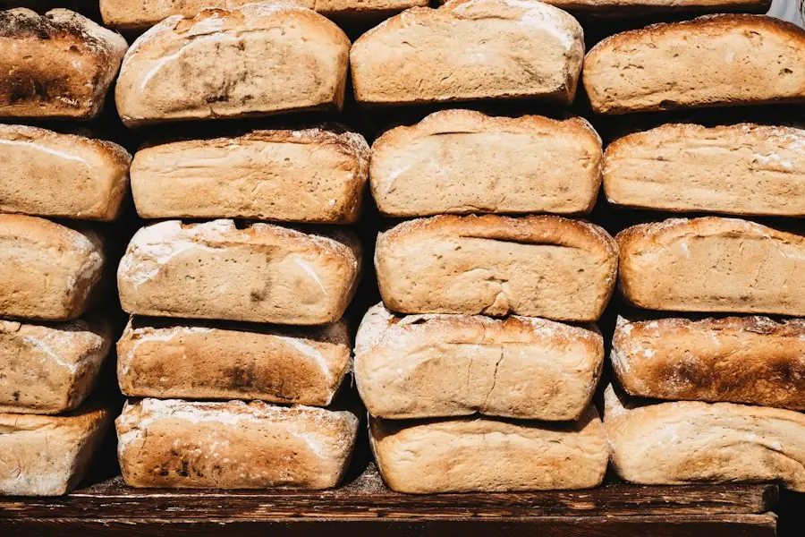

メニュー・値段・取り置き
パンと取り置き
いつも並んでいるパンの値段と、アレルギーの原材料の一覧です。季節のパンは月ごとに入れ替わります。

季節のパンのめぐり
1年の季節のパン
素材が手に入る時期だけ焼きます。年によって変わることもあります。
- 3〜5月いちごのデニッシュ、桜あんぱん、新たまねぎのフォカッチャ
- 6〜8月とうもろこしのパン、レモンのブリオッシュ、夏野菜のカレーパン
- 9〜11月栗とほうじ茶のブリオッシュ、かぼちゃのまるパン、さつまいもあん
- 12〜2月シュトーレン（予約制）、りんごのメロンパン、ゆずのクリームパン
予約・取り置きのルール
取り置きについて
- 締め切り
- 受け取りの前日17時まで（月火定休のため、水曜分は日曜17時まで）
- 受け取り
- その日の7:30〜17:30。時間を過ぎたパンは、お店に並べることがあります
- 個数
- 1種類10個まで。それ以上や、会議・行事用のまとめ買いはご相談ください
- お支払い
- 受け取りのときに、現金・交通系IC・QRコード決済
- キャンセル
- 前日17時までにご連絡ください。料金はかかりません
よくある質問
パンのこと Q&A
当日の朝でも取り置きできますか？
当日分は、店頭のパンをお電話でとっておく形になります。焼き上がり前なら、できる限り対応します。
パンの切り方は選べますか？
食パンは6枚・8枚・サンドイッチ用の12枚から選べます。焼きたては切りにくいので、少しお時間をください。
冷凍しても大丈夫ですか？
その日のうちに1枚ずつラップで包んで冷凍すると、2週間ほどおいしく食べられます。凍ったままトーストしてください。
シュトーレンの予約はいつからですか？
11月上旬から店頭とこのサイトで受け付けます。12月の受け取りで、数に限りがあります。
卵・乳を使わないパンはありますか？
バゲット・カンパーニュ・フォカッチャなどは卵と乳を使っていません。同じ工房で作るため、ごく少量の混入の可能性はあります。